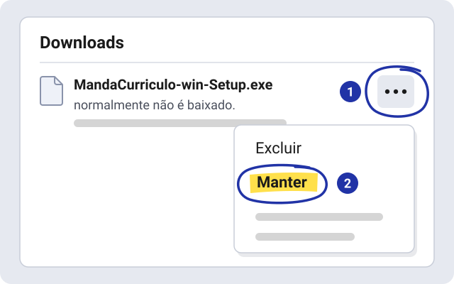
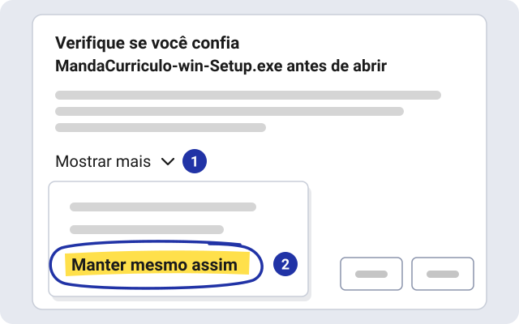
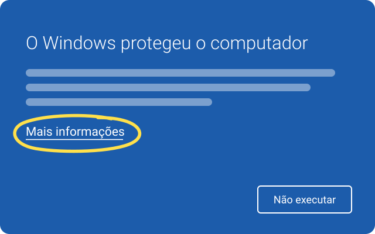
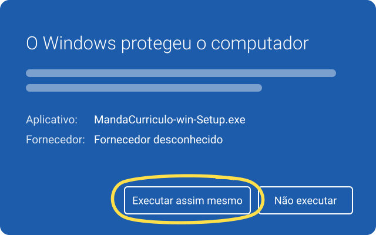

Baixar o Manda Currículo
Grátis, para computador com Windows 10 ou 11. Esta é a versão de teste (beta): pode ter falhas, que vão sendo corrigidas com a ajuda de quem usa.
Está no celular? O Manda Currículo só funciona em computador com Windows: abra este site no computador para baixar.
O arquivo se chama MandaCurriculo-win-Setup.exe. A instalação não pede senha de administrador.
Se o download não começar, abra a página de versões e clique em MandaCurriculo-win-Setup.exe.
O download começou. Quando terminar, siga os passos de Como instalar, nesta página.
Antes de baixar, confira
- Computador com Windows 10 ou 11, fora do modo S. Ainda não funciona em celular, Mac ou Linux.
- Internet e o computador ligado durante o dia, sem entrar em suspensão (modo de descanso): o programa só trabalha com ele acordado. A ajuda mostra como evitar a suspensão.
- Uma conta de candidato na Gupy. Criar é grátis.
- Uma conta do Google, para criar a chave grátis da IA. A ajuda mostra como.
- Ter 18 anos ou mais.
Como instalar
-
1
Se o navegador desconfiar do arquivo, escolha “Manter”
Como o programa é novo e pouca gente baixou, o navegador pode segurar o download e mostrar um aviso. Isso não quer dizer que ele achou vírus no arquivo.
No Edge, o navegador que vem no Windows, a lista de downloads mostra que o arquivo “normalmente não é baixado”. Clique nos três pontinhos (…) ao lado do aviso e escolha “Manter”.

Desenho simplificado da lista de downloads do Edge. No seu computador, ela pode ser um pouco diferente. Vai abrir uma janela que começa com “Verifique se você confia”. Clique em “Mostrar mais” e depois em “Manter mesmo assim”.

Só escolha “Manter mesmo assim” se o arquivo for o MandaCurriculo-win-Setup.exe baixado deste site. No Chrome, o aviso aparece como “Download suspeito bloqueado”, na lista de downloads, no canto de cima. Clique nele e escolha “Baixar o arquivo suspeito”.
Isso libera só este arquivo. Não desligue a proteção do navegador.
-
2
Abra o arquivo baixado
Ele se chama MandaCurriculo-win-Setup.exe e costuma ficar na pasta Downloads. Você também pode abrir direto pela lista de downloads do navegador.
-
3
Se aparecer o aviso azul, clique em “Mais informações”
O aviso diz “O Windows protegeu o computador”. Ele aparece porque o programa é novo e ainda não tem assinatura digital. O link “Mais informações” fica logo abaixo do texto.

Desenho simplificado do aviso. No seu computador, ele pode ser um pouco diferente. -
4
Confira o nome e clique em “Executar assim mesmo”
Confira se o aplicativo é o MandaCurriculo-win-Setup.exe. Em “Fornecedor” vai aparecer “Fornecedor desconhecido”, o que é normal para programas sem assinatura digital.

Só clique em “Executar assim mesmo” se o nome do arquivo for esse. -
5
Espere terminar e abra o programa
A instalação é rápida e não pede senha de administrador. Se o Manda Currículo não abrir sozinho, procure por ele no menu Iniciar. Na primeira vez, ele começa um cadastro guiado.
Por que o Windows mostra esse aviso?
O Windows e o navegador avisam quando um programa é novo, foi baixado por pouca gente e não tem assinatura digital, um certificado pago que identifica quem publicou o programa. Nesta versão de teste, gratuita, o Manda Currículo ainda não tem esse certificado. Por isso o aviso do Windows fala em “Fornecedor desconhecido”.
Escolher “Manter” no navegador e clicar em “Executar assim mesmo” no Windows libera só este arquivo. Não desligue a proteção do Windows, a do navegador nem o antivírus.
Para baixar com segurança:
- Baixe só por este site ou pela página de versões do projeto no GitHub. Na página de versões, abra a lista de arquivos (Assets) da versão mais recente e clique em MandaCurriculo-win-Setup.exe. Os outros arquivos da lista são usados pelo programa para se atualizar.
- Confira se o arquivo se chama MandaCurriculo-win-Setup.exe.
- Desconfie de qualquer outro site que ofereça o programa, principalmente se pedir pagamento ou dados seus. O Manda Currículo é gratuito.
E se não aparecer “Executar assim mesmo”?
Alguns computadores, principalmente notebooks mais baratos, vêm com o Windows no modo S. Nesse modo, o Windows só abre aplicativos da Microsoft Store e o Manda Currículo não instala: aparece um aviso dizendo que esse modo do Windows só executa aplicativos verificados da Microsoft Store. Para saber se o seu está no modo S, abra Configurações › Sistema › Sobre e veja a edição do Windows. Sair do modo S é grátis, mas não tem volta: decida com calma e não faça isso só por causa do Manda Currículo.
Em alguns computadores com Windows 11, o Controle Inteligente de Aplicativos bloqueia todo programa sem assinatura digital, sem opção de continuar. Por enquanto, o Manda Currículo não consegue ser instalado nesses computadores. Não desligue essa proteção por causa dele.
E se o antivírus reclamar?
Antivírus às vezes desconfiam de programas novos e sem assinatura. Não desative o antivírus. Avise a gente na área de perguntas e problemas do projeto no GitHub (Issues), dizendo qual antivírus você usa.
Depois de instalar
Na primeira vez, o programa mostra as boas-vindas e os termos de uso. Depois vem o cadastro guiado, um passo de cada vez:
- Chave grátis da IA do Google (veja como criar).
- Seu currículo: importe em PDF ou Word, ou preencha.
- O que você procura: cargos, cidades e trabalho remoto.
- Respostas para as perguntas que as empresas sempre fazem.
- Documentos, se quiser. Eles ficam criptografados (protegidos) no seu computador.
- Conectar sua conta da Gupy (veja como funciona).
- Opcionais: e-mail, LinkedIn e relatório.
- Carta de apresentação.
- Pronto.
Depois do cadastro, o ícone do Manda Currículo fica perto do relógio do Windows. Por ele, você abre o painel, pausa, retoma ou pede para procurar vagas na hora.
Quando sai uma versão nova, o programa se atualiza sozinho.
Ficou com dúvida? Veja a ajuda.